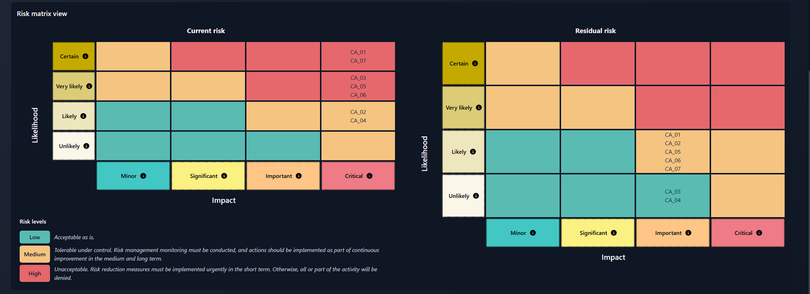

Ylayann Malouda-Ribardiere
Étudiant en BTS SIO option SISR à Ynov Lille, je me spécialise en gouvernance, risques et conformité. J'analyse les risques avec EBIOS RM, je construis des SMSI ISO 27001 et je m'intéresse à la gouvernance de l'IA. Les CTF me servent à comprendre concrètement les chemins d'attaque que mes analyses de risque décrivent.
ylayann@ynov:~$ cat profil.txt formation : BTS SIO option SISR, Ynov Lille cible : GRC · gestion des risques · conformité référentiels : ISO 27001 · EBIOS RM · ISO 42001 · DORA · RGPD projet : SMSI complet pour une néobanque fictive pratique : CTF web pour comprendre les chemins d'attaque recherche : alternance GRC 2027 ylayann@ynov:~$
À propos
Qui je suis et ce que je cherche
Je suis en BTS SIO option SISR (Solutions d'infrastructure, systèmes et réseaux) à Ynov Lille. Je vise un poste en GRC : traduire les menaces en risques compréhensibles par une direction, puis en mesures concrètes, chiffrées et suivies.
Mon projet SMSI Orséa Banque m'a fait passer par toutes les étapes, de l'analyse EBIOS RM à la présentation au comité exécutif. En parallèle, je résous des challenges CTF et je les documente : une analyse de risque est meilleure quand on sait comment l'attaque se déroule vraiment.
Mes stages en support, en automatisation et en développement m'ont donné le terrain technique qui va avec : parc informatique, Linux, Ansible, VMware et intégration d'IA.
$ experiences --list
Ozibe · stage
Développement web et logiciel, intégration de modèles d'IA dans une application.
Ezytech · stage
Automatisation des processus IT avec Ansible, administration Linux, VMware, SSH.
Mairie de Lille · en poste
Helpdesk, gestion des identités et des accès, gestion de parc informatique et infrastructure.
Ynov Lille · en cours
Infrastructure, systèmes, réseaux et cybersécurité.
Compétences
GRC d'abord, avec le socle technique pour comprendre ce qu'on protège
$ grc --core
$ grc --ia
$ offensif --comprendre
$ infra --sys --net
$ support
$ dev --outils
Certifications et formations
Ce que j'ai validé en dehors du BTS
ISO 42001 AI Governance Fundamentals (I42001AIGF™)
CertiProf · oct. 2026 · valide jusqu'en oct. 2027
L'atelier RGPD
CNIL · sept. 2026
CCNA : Introduction to Networks
Cisco · sept. 2026
Introduction to Cybersecurity
Cisco Networking Academy · sept. 2026
Formation Cybersécurité & Pentest BlueFaculty
Bluehack · sept. 2026
Projet phare · SMSI Orséa Banque
ISO 27001 et analyse de risques EBIOS RM, menés de A à Z sur une néobanque fictive
Analyse de risques EBIOS RM en cinq ateliers, évaluation des 93 contrôles de l'Annexe A d'ISO 27001:2022, plan de traitement chiffré, PSSI en 15 sections et présentation au comité exécutif. Réalisé avec CISO Assistant en local sous Docker.

Orséa Banque est une entreprise fictive : les chiffres et budgets sont inventés pour l'exercice.
Write-ups CTF
Je résous des challenges pour comprendre les chemins d'attaque que j'évalue en analyse de risque. Le dépôt complet sur GitHub →
Injection SQL sur DVWA
D'un simple champ « User ID » jusqu'à l'extraction des identifiants de tous les comptes, en UNION-based.
IDOR sur BluePortal
Un mot de passe faible, un paramètre id=2 changé en id=1, et me voilà admin.
Path Traversal sur File Viewer
Lire des fichiers hors du dossier prévu grâce à un paramètre d'URL mal contrôlé.